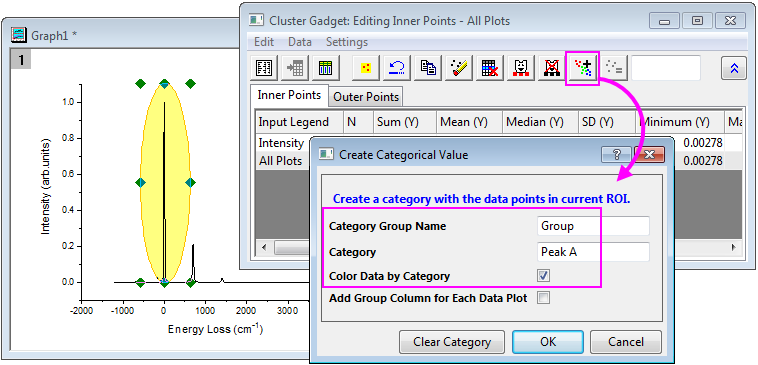
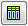
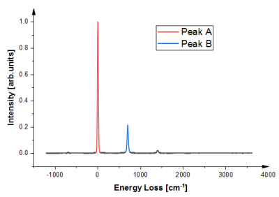
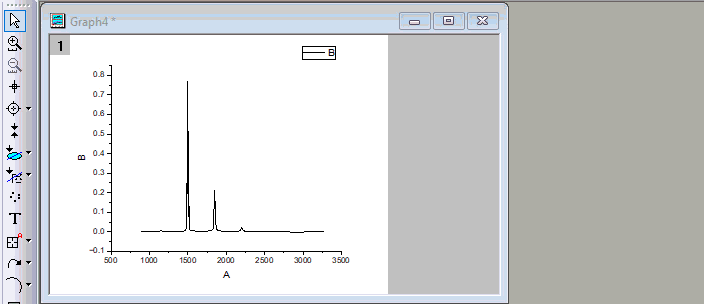

FAQ-874 Wie bilde ich Bereiche in einem Liniendiagramm farblich ab?
Color-Regions-of-Line
Letztes Update: 31.07.2023
Um einige Bereiche in einem Liniendiagramm mit Farbe zu versehen, können Sie
verwenden, um die Bereiche in Kategorien zu gruppieren und dann dass Liniendiagramm nach kategorialen Daten farblich abzubilden.
| Hinweis: Das Minitool Clustermanipulation steht nur in OriginPro zur Verfügung. |
Minitool Clustermanipulation
Um beispielsweise Peak A und Peak B im folgenden Liniendiagramm mit unterschiedlichen Farben zu markieren:

- Wählen Sie bei aktivem Diagramm Minitool: Clustermanipulation.
- Wählen Sie im Dialog auf der Registerkarte Grafische Datenauswahl Kreis unter Form, da ein kreisförmiges ROI-Feld flexibler beim Umranden des Peakbereichs ist. Klicken Sie auf OK. Ein ROI-Kreis wird im Diagramm platziert.
- Verschieben Sie die ROI-Fläche auf den Peak A. Ziehen Sie an den 8 Ankern, um die Größe und Form des ROI-Felds anzupassen, so dass es den Bereich von Peak, wie gewünscht, abdeckt.
- Klicken Sie auf die Schaltfläche Kategorien erstellen
 im Dialog Minitool Clustermanipulation: Innere Punkte bearbeiten.
im Dialog Minitool Clustermanipulation: Innere Punkte bearbeiten. - Benennen Sie im Dialog Kategorialen Wert erstellen Ihre Kategoriegruppe und vergeben Sie einen kategorialen Wert für die Datenpunkte im ROI-Feld. Aktivieren Sie das Kontrollkästchen Farbdaten nach Kategorie. Dieser kategoriale Wert wird nun als der Farbindex für die Datenzeichnung festgelegt.
- 
- Wiederholen Sie Schritt 3 bis 5, um den Bereich von Peak B zu markieren und legen Sie den kategorialen Wert fest.
- Sie können auf die Schaltfläche Zum Quellarbeitsblatt gehen  klicken, um zu den Quelldaten zu gehen. Es wird eine Spalte "Gruppe" hinzugefügt, die die kategorialen Werte enthält, die Sie gerade festgelegt haben.
Am Ende erhalten wir folgendes Diagramm.

Datenmarkierer
Dies kann auch mit der Datenmarkierung erreicht werden. Das heißt:
- Wählen Sie bei aktiver Grafik die Schaltfläche Datenmarkierung
 auf der Symbolleiste Hilfsmittel auf der linken Seite.
auf der Symbolleiste Hilfsmittel auf der linken Seite.
Der Cursor der Maus verwandelt sich dann in den Modus der Datenmarkierung und die Minisymbolleiste Datenmarkierung wird oben rechts im Diagrammfenster angezeigt.
- Ziehen Sie ein Rechteck auf, um den Bereich von Peak A, wie gewünscht, abzudecken. Datenpunkte innerhalb dieses Bereichs werden markiert.
- Klicken Sie auf die Schaltfläche Kategorien erstellen
 auf der Minisymbolleiste. Der Dialog Kategorialer Wert erstellen wird geöffnet.
auf der Minisymbolleiste. Der Dialog Kategorialer Wert erstellen wird geöffnet. - Geben Sie Ihrer Kategoriegruppe einen Namen und den markierten Datenpunkten einen kategorialen Wert. Aktivieren Sie das Kontrollkästchen Farbdaten nach Kategorie. Dieser kategoriale Wert wird nun als der Farbindex für die Datenzeichnung festgelegt.
- Wiederholen Sie Schritt 2 bis 4, um den Bereich von Peak B zu markieren und legen Sie den kategorialen Wert fest.
- 
- Wenn Sie zum Arbeitsblatt mit den Quelldaten gehen, wird eine Spalte "Gruppe" hinzugefügt, die die kategorialen Werte enthält, die Sie gerade festgelegt haben.
Schlüsselwörter:Linienkurve, Farbabbildung, Bereich des Diagramms, farbliche Peaks